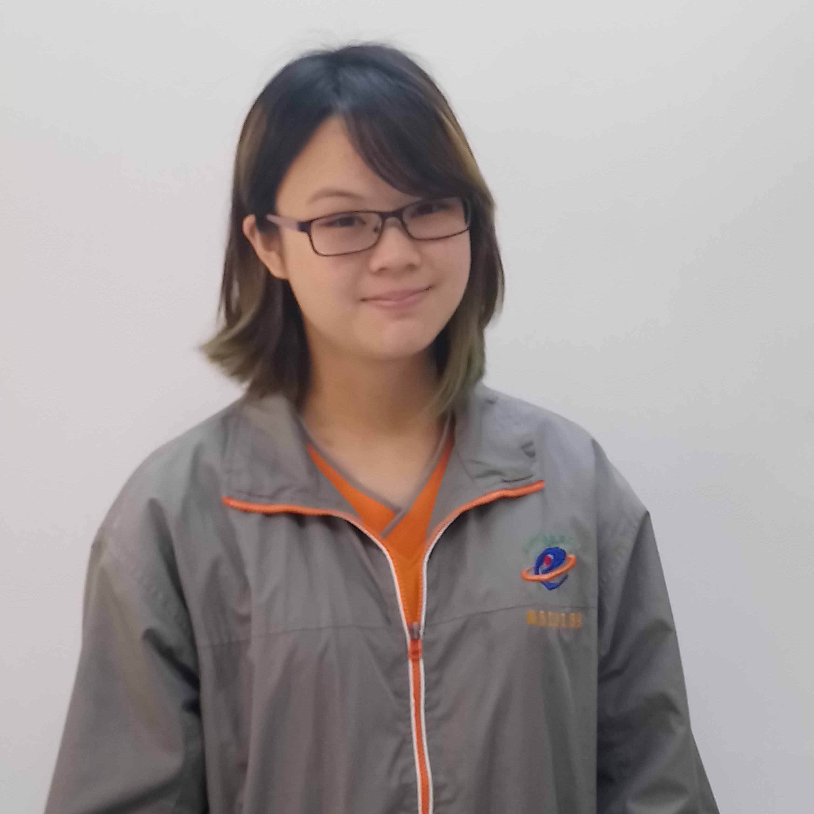
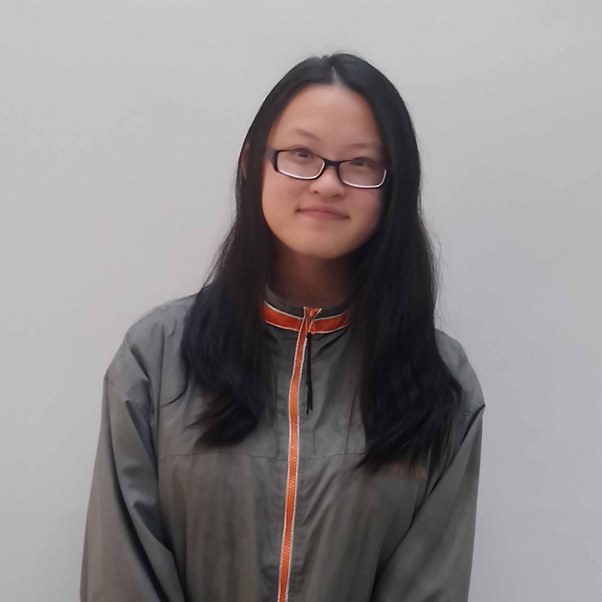
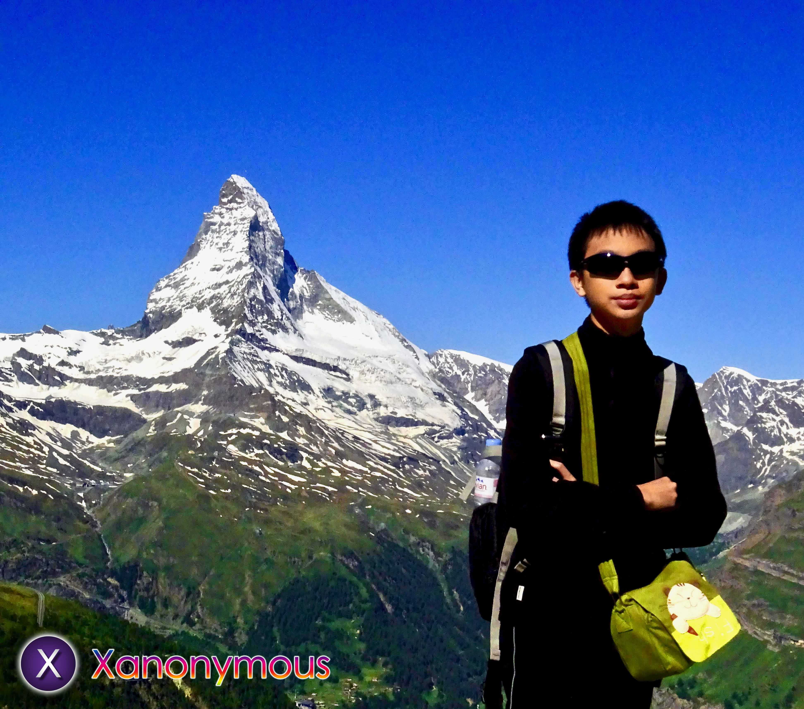
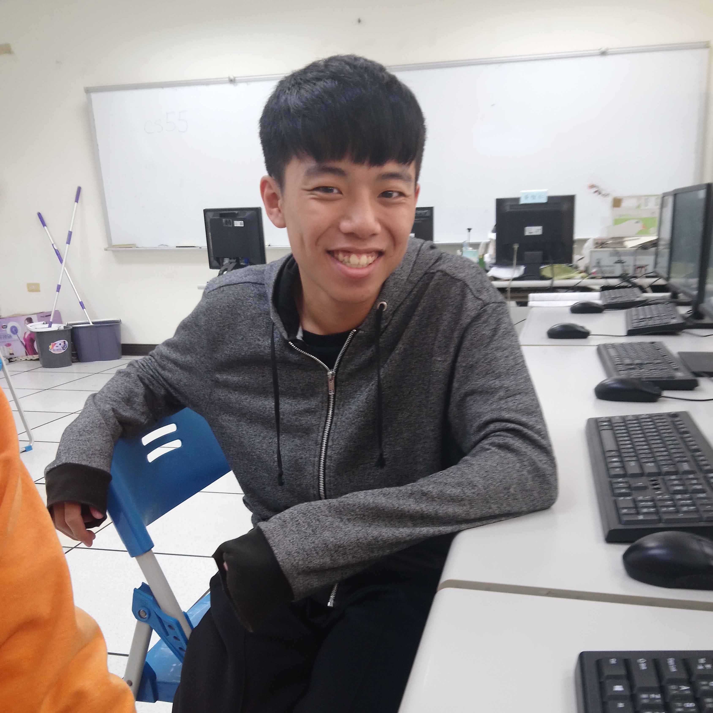
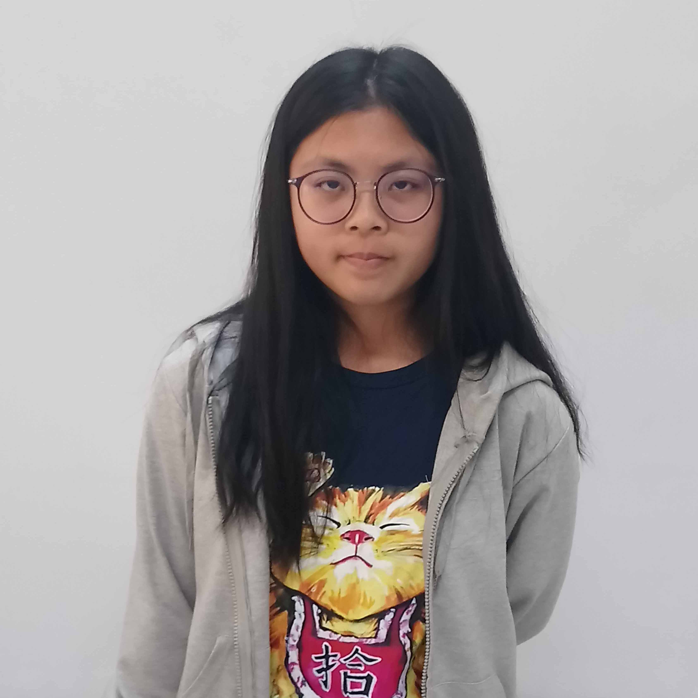
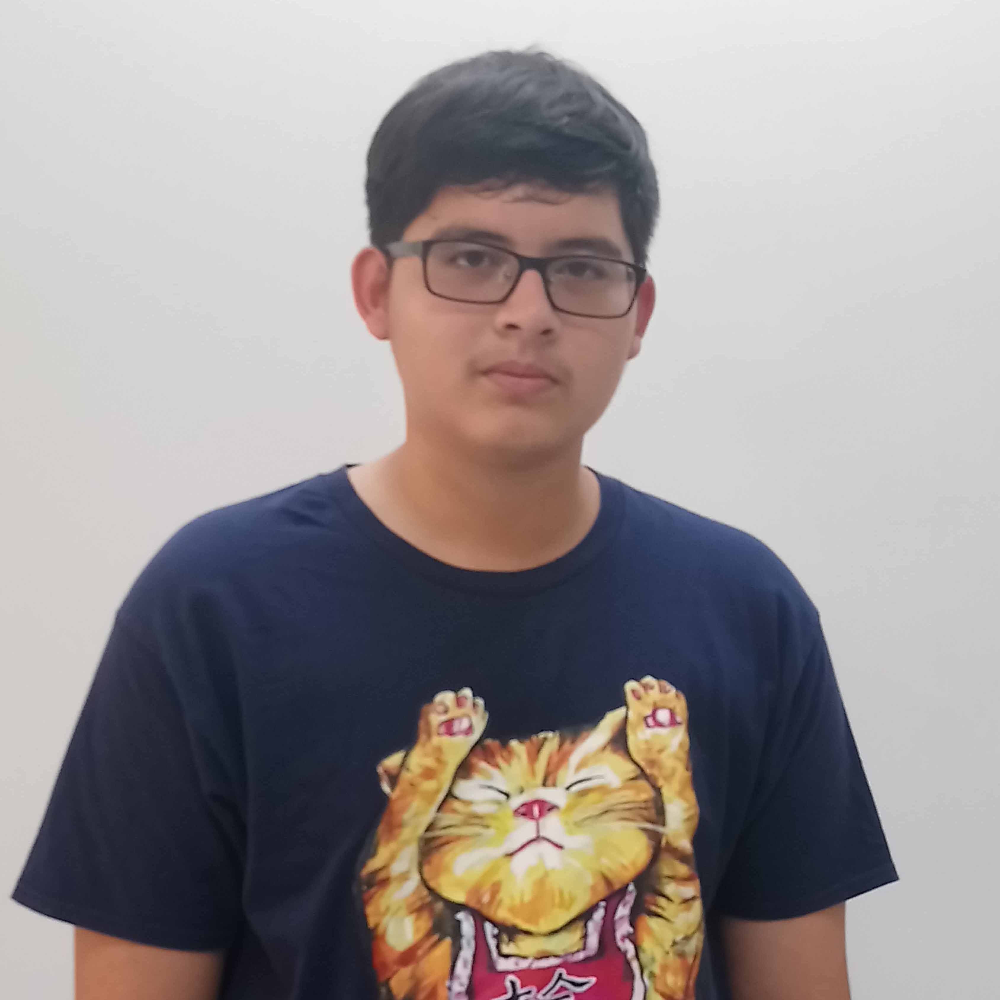

幕後花絮
周沂臻
 圖片來源:自行拍攝
圖片來源:自行拍攝
參加這次的比賽，讓我們宛若白紙的生命，印下許多精彩的篇章。
出外採訪部分，我們要學習如何有禮貌的與受訪者對答；寫文章部分，我們不僅要將採訪到的內容作出整理，也要上網搜尋資料，並確認資料的正確性；製作網頁部分，不僅要瞭解程式語言，也要確認每個連結與語法；翻譯部分，因為中文與英文的邏輯不同，所以也要學習如何轉換。
而時間管理與互相溝通是最大難題，但是這兩項都是大學習。但跌倒後再爬起得到的經驗，對未來，最受用。
鍾思綺
圖片來源:自行拍攝人人都會說話，但是說得好與不好，就是一門學問了，而訪問到撰稿，又是另一門學問了。我們要了解的是：如何把受訪者想傳達給社會大眾的資訊清楚的轉化成文字，而又不失當時生動的韻味？所以，平時磨的功夫，就要在這時運用上了。
感謝那些包容我們的受訪者，我們在採訪時犯的錯誤不少，甚至偶爾會失了禮貌，但是他們仍然耐心的聆聽我們的問題，並詳細的回答我們的問題。也感謝指導我們的蔡淇華主任及黃智仁老師，兩位老師都百忙中抽空來教導我們，修正我們的錯誤，真的讓我們學到了很多。
國際網博也是一個全新的體驗，不同於以往的小組分工作業那麼輕鬆，我們這次遇到了友誼間的危機，但是我們還是憑著自己的努力克服了它，參加這個活動是個難能可貴的經驗，我們一定會好好珍惜。
最後感謝兩位幫我們製作網頁及三位翻譯的同學，他們十分認真的製作且做出來的成品也極其地出色。
王芊芸
圖片來源:自行拍攝一開始沒有想到會參加這個比賽，隊友們的素質太好了。不論是什麼樣的事，合作的機會都是難得的，能與不同的人交往、溝通，然後獲得一個再次認識這個地方的機會，我非常的感動，也非常的感謝。
張廷愷
 圖片來源:自行拍攝
圖片來源:自行拍攝
剛接觸這個專題時，其實是抱著一種疑惑的心情去看待的。我們要做什麼？我們要怎麼做？我們學到什麼？康橋其實離我讀國中的地方挺近的，但我卻一次也沒有去正視過它的存在，只當作是一條河罷了。然而這個專題，卻大大地將從前的印象打破。在老師的帶領下，我們陸陸續續和完成康橋計畫的眾人們採訪，從中記錄著當初辛勤的每一步。從上到下，須靠政府逐步規劃和民眾配合；從裡到外，須將本土發揚國際。多麼令人感到震驚！
蘇聖涵
 圖片來源:自行拍攝
圖片來源:自行拍攝
參與這次的比賽，讓我了解水環境對我們的生活有多重要！早期我們因一時的方便，將汙水直接排放，造成後來需要花更多錢和心思去清理，雖然無法馬上見效，但一點一點不偷工減料的完成改善，這是一個信念。其次，我也學習到團隊合作的重要性，一個人無法做太多事，需要一人完成一小部分，再加以整合，才能夠完成整個工作。
林天佑
圖片來源:自行拍攝經過這次的比賽，作為小組中的核心網頁設計者，讓我從中學習到更多有關架設網站的專業技術，以及應該注意的部分，像是整體的一致性和美的協調，或是連結至各個分頁的連結等等；而在這過程中，我也了解到自己能力的不足，以及團隊合作的重要，不能因為一時耽擱而造成大家的心血白費。這次的經驗真的讓我收穫不少，期待日後能更上一層樓。
楊楷荃
圖片來源:自行拍攝這次比賽負責網頁的製作，發現人外有人，天外有天，自己製作網頁的功力實在有待加強；也體會到一個人的力量是多麼不足，與他人檢討作品的問題更容易事半功倍。這個團隊中的成員個個身懷絕技，相信這紮穩打的功夫能夠帶給我們好成績。
施昌沛
 圖片來源:自行拍攝
圖片來源:自行拍攝
參與這次的國際網路博覽會的翻譯讓我體會到，雖然學了那麼久的英文，但真正要應用時，遠比想像中的難很多，經過老師的指導後，我學習到很多中翻英的技巧。雖然要翻譯的量很大，需要一定的毅力，但只要抱持著一顆學習的心，問題就能迎刃而解。感謝老師給我這次參與國際網路博覽會的機會，也感謝其他組員對我的幫助與指教。
鄭亦芩
圖片來源:自行拍攝此次有幸參加國際網博比賽,且擔任翻譯組員,讓我學到了不少,不僅在查詢英文專有名詞之際加強英文能力,還在翻譯文句時學到如何讓句子更完整、更易懂,除此之外,我更得知了許多有關康橋的故事，都使我的眼界更寬廣。
倪秉榕
圖片來源:自行拍攝經過參與這次的國際網頁博覽會的比賽，讓我了解到想要架設一個網頁是多麼的花時間及困難, 因此每個人必須各司其職，並做好自己份內的工作，才能夠完成。我主要負責翻譯，在這次的翻譯過程中讓我學到了許多英文單字，及許多時態的用法，也讓我知道網頁製作的過程是如此的繁雜，令我大開眼界！